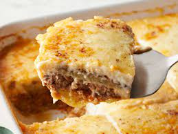

Moussaka

Description:
This moussaka tastes great! Layers of sliced eggplant are baked in a ground beef sauce and smothered in a creamy white béchamel sauce in this classic Greek dish.
Ingredients:
-
Salt to Taste
-
1 Tablespoon of Butter
-
2 Onions,Chopped
-
And many more
Steps:
-
Lay eggplant slices on paper towels; sprinkle lightly with salt. Let sit for 30 minutes to draw out moisture, then pat dry with paper towels.
-
Warm olive oil in a skillet over high heat. Fry eggplant until browned, 2 to 3 minutes per side. Drain on paper towels; set aside.
-
And some moisture